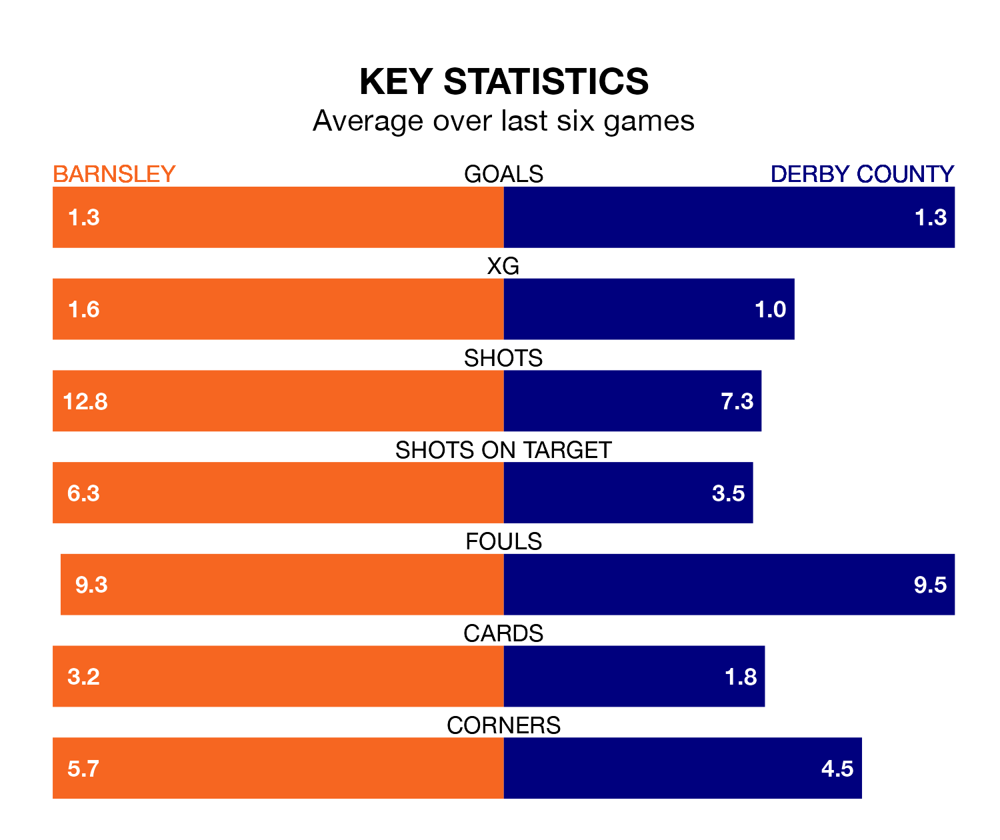

Two of EFL League One's top sides face each other at Oakwell in Saturday's kick-off, when fourth-placed Barnsley host second-placed Derby County.
Barnsley have picked up 17 wins and nine draws from 32 games so far this season, and sit six points below the visitors going into the 3pm match.
The Rams, meanwhile, have won 20 and drawn six of 33, picking up 66 points.
With 58 goals in 32 games so far this season, Barnsley are the league's joint-third-highest scorers with 1.8 goals per game. And they are conceding fewer than average, letting in 36 goals at a rate of 1.1 per game.
Derby are also above average scorers, with 1.8 goals per game, compared to a league average of 1.3. They have conceded 0.9 goals per game.
In Devante Cole, the Tykes have the league's sharpest shooter so far this season. He has notched 17 goals in 32 appearances.
His goal rate of one every 157 minutes is quicker than that of James Collins, County's top scorer with a goal every 173 minutes, and a total of 13 goals in 32 games.
In the last 10 years, Barnsley and Derby have played each other on 16 occasions. Barnsley won five of them, Derby nine, and they drew twice.
On average, the Tykes scored 1.2 goals and the Rams 1.8 in those matches.
Their last meeting was on November 11, when Derby won 3-0 at home.
The hosts are in reasonable form in EFL League One, with three wins and two draws from their last six games.
With four wins and a draw over that period, the Rams' form is slightly better – they have taken 13 points from 18, compared to Barnsley's 11.
Barnsley's last match was on February 17, a 2-1 win against Fleetwood Town, with Herbie Kane and Sam Cosgrove getting the goals for the Tykes.
Derby beat Stevenage 1-0 last time out, also on February 17, with Louie Sibley on the scoresheet.
Updated: 10:08 (UTC), 23/02/24